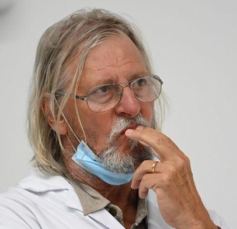
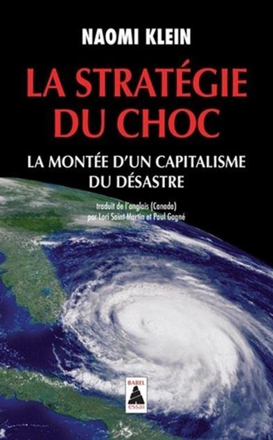
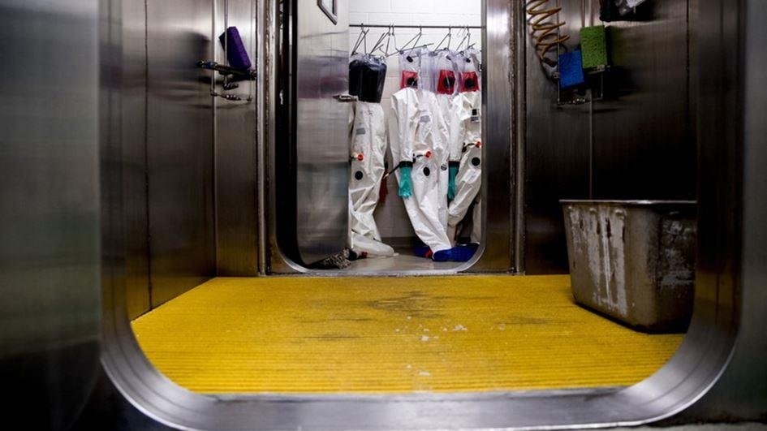

Décryptage de la « Plandémie » Covid-19 (2nde partie)
par Amar GOUDJIL
Si l’on en croît ce qu’explique l’OMS à travers ses publications et ce que le publie également le Forum Économique Mondial sur son site, nous sommes en droit de nous demander quelle sera alors l’issue de cette partie finale qui se joue entre ceux qui veulent nous contrôler et nous posséder d’une part et ceux qui ne veulent pas de ce projet d’autre part ?
Pour répondre à ces nombreuses questions qui pointent du doigt les incompétences et les erreurs des gouvernements dans la gestion de cette crise et cet entretien de la terreur par les effets statistiques via la propagande médiatique, force est de constater qu’il ne s’agit pas d’erreur mais bien de stratégie.
Le 18 octobre 2019, au Johns Hopkins Center for Health Security à New York, s’est sans doute tenu concernant l’avenir du monde, une des réunions les plus importantes de toute l’année 2019.
Il s’agit de l’événement 2011.
Cette réunion, organisée en partenariat entre le centre John Hopkins, la fondation Bill et Melinda GATES et le Forum Économique Mondial, avait pour objectif de préparer l’exercice dont parle l’OMS dans son Global Preparedness Monitoring Board de 2019. Elle s’est tenue en public avec des invités particulièrement triés sur le volet et sous forme d’une pièce de théâtre2 où chacun avait un rôle bien précis.
La simulation consistait à se préparer à la prochaine pandémie mondiale qui, selon les chiffres avancés lors de cette réunion, allait faire plus de 65 millions de morts sans compter les dégâts incommensurables qu’une telle catastrophe allait provoquer sur l’économie globale : soit une chute du PIB mondial de 11 points.
Ce qui est intéressant à savoir c’est que tous les gouvernements et la plupart des grands médias de la planète étaient au courant de cette réunion. Seulement personne n’en a parlé. La consigne était de ne pas en parler. Pourtant cet exercice n’était pas qu’une simulation, c’était une véritable préparation à la pandémie qui allait venir quelques semaines plus tard mais si vous répétez cela, vous êtes aussitôt désigné comme complotiste et vous êtes discrédité à vie.
Si vous regardez bien le parcours professionnel des personnages politiques en fonction, vous verrez que la plupart des Ministres de la santé viennent presque tous du privé et ont tous des liens plus ou moins étroits avec les plus grandes entreprises pharmaceutiques de la planète.
Et alors diront les libéraux dont je fais partie ? Est-ce interdit ? Bien sûr que non.
Oui c’est légal et ce n’est pas mal en soi.
Mais comment ces gens, qui sont censés travailler pour le bien-être et l’intérêt des peuples et des nations, peuvent agir en même temps dans l’intérêt des entreprises pharmaceutiques, dont l’objectif in fine est de rendre malade les peuples et les nations pour ensuite leur revendre des traitements sous licences afin faire un maximum de profits ?
N’y a-t-il pas là un conflit d’intérêt ? Bien sûr que oui.
Rappelez-vous, car nous l’avons vu plus haut, qu’en cas de crise sanitaire mondiale, comme c’est le cas avec cette crise du COVID-19, tous les états membres doivent impérativement accepter de suivre les consignes du Conseil Mondial lequel est dirigé actuellement par Madame Gro Harlem BRUNDTLAND3. Une charmante dame très connue pour avoir échappée à la mort lors de la tuerie D’Utoya en Norvège et dont le père, Gudmund HARLEM, était redevable à la fondation ROCKFELLER pour lui avoir financé ses études de médecine.
La création et la présentation du Conseil Mondial a été officiellement annoncée par communiqué de presse à l’OMS le 24 mai 2018. Son rôle principal, en cas de pandémie, est de réunir tous les dirigeants du monde afin de leur faire part de la stratégie mise en place par le Conseil et de leur donner les consignes à suivre pour endiguer la pandémie en cours sur leur territoire. Sa création est le résultat d’un travail conjoint entre l’OMS et le Groupe de la Banque Mondiale.
Petit flashback intéressant concernant la Banque Mondiale.
Le 28 juin 2017, la Banque Mondiale, qui est une Banque censée aider les pays les plus pauvres de la planète, a eu l’incroyable idée d’émettre sur le marché des obligations des « Pandemic Bonds » 4. C'est-à-dire des bons obligataires à un horizon de 3 ans basés sur un risque de pandémie.
Une idée folle n’est-ce pas ? Pas tant que ça à vrai dire surtout si vous êtes une banque, un fond de pension ou un fond d’investissement et que vous êtes au courant, -et en droit financier cela s’appelle le délit d’initié-, qu’il va y avoir une pandémie.
A votre avis, combien de banque accepterait de se lancer, -de façon hasardeuse-, dans l’émission de telles obligations sans avoir la certitude de ramasser le jackpot avant la fin du contrat ? Aucune.
Comment pouvez-vous prévoir une pandémie ? C’est tout simplement impossible.
Alors en quoi consiste ces pandemics bonds 5 ? C’est très simple.
La Banque Mondiale vend pour X millions de dollars de bons à des fonds, des sociétés ou des états en misant sur le fait qu’il y aura une pandémie avant le 15 juillet 2020. Ceux-ci fonctionnent comme des contrats d’assurance avec des rendements allant jusqu’à 12%. Si une pandémie est déclarée avant le 27 juin 2020, alors les acheteurs de ces contrats perdent leur mise et une partie de l’argent collecté est reversé aux pays les plus pauvres de la planète (75 états). S’il n’y a pas de pandémie, les investisseurs récupèrent leur mise de départ et les intérêts en découlant.
Aujourd’hui, toutes les structures qui ont investi dans les pandemics bonds disent qu’il y a anguille sous roche et ont perdu leur mise. Ce qui est intéressant également à noter c’est que les pays les plus pauvres de la planète n’ont toujours pas touchés leurs aides. Ces contrats en effet, qui prenaient en compte le virus concerné, le début de la pandémie, son évolution ou encore le nombre de morts, etc, étaient en réalité bien plus complexes qu’ils n’en avaient l’air.
Pour Arturo Bris6, professeur de finance, il n’y a aucun doute. « Les gens qui sont à l’origine de la création et de l’émission des pandemic bonds étaient au courant du fait qu’il allait y avoir une pandémie de coronavirus avant le 15 juillet 2020 ».
Ce sont de graves accusations mais sont-elles réellement infondées ou complotistes ? Pas si sûr.
A ce stade, il est devenu difficile de défendre l’idée que le SARS-COV2, qui provoque cette pathologie respiratoire dénommée la COVID-19, est un virus provenant directement de la nature et que personne n’était au courant comme il est encore plus difficile de croire, que tout le monde a été surpris et pris de court et que tous les gouvernements de la planète ont été des amateurs.
Peut-être que la Chine a menti, comme un Pinocchio sur la page de couverture d’un magazine économique et financier, et peut-être que même que l’état profond chinois a été complice dans la dissémination délibérée de ce virus et dans la communication théâtrale de cette pièce tragique et funeste. Nous ne le saurons peut-être jamais.
Mais ce qui est certain et que nous commençons à comprendre, c’est que dans cette ère où l’intelligence artificielle est censée remplacer l’homme, nous allons de surprise en surprise.
LE VACCIN FINAL ET LE PROJET « TRUST STAMP » DE BILL GATES
Le souhait de Bill GATES et des eugénistes, et qui est de vouloir coûte que coûte contrôler et vacciner toute la planète sous couvert d’avancées humanitaire et philanthropique, ne date pas d’hier.
Comme le montre la photo ci-dessous, on voit bien que le père du créateur de MICROSOFT, en pose très confiante avec David ROCKFELLER et son petit-fils, se connaissait déjà. Monsieur GATES est au milieu et c’est assez révélateur.
Le projet conjoint « Trust Stamp7 » de la fondation Bill et Melinda GATES, de la fondation ROCKFELLER et de MASTERCARD consiste à vacciner tous les êtres humains sous les prétextes de lutte contre le blanchiment ou de lutte contre le trafic d’êtres humains comme on peut le lire sur l’onglet « humanitaire » du site8.
La réalité est tout autre et d’ailleurs, les premières expériences sont déjà en cours en Afrique de l’Ouest9. Intéressant de voir que c’est toujours en Afrique, en Inde ou dans les régions les plus pauvres de la planète que Bill GATES et ses amis philanthropes testent toujours leurs dernières trouvailles.
L’organisation « ID2020 »10, qui est également le nom d’un autre projet conjoint de vaccination planétaire piloté par Bill GATES et dont les principaux partenaires sont là encore les fondations GATES et ROCKFELLER, s’engagent à fournir une identité numérique aux milliards de sans-papiers qui migrent à travers le monde.
S’agissant du vaccin, qui est déjà massivement inoculé en Afrique de l’Ouest et au Bangladesh et qui contient non seulement l’ARN capable de modifier notre génome en temps réel mais aussi les nanoparticules censées interagir avec les réseaux d’intelligence artificielle auxquels tous les vaccinés seront connectés, il est impossible dans l’immédiat de prédire quels seront les effets premiers et les effets secondaires.
Du point de vue juridique, les citoyens vaccinés n’auront aucun recours possible pour se défendre car, comme vous le savez sans doute, aucune des sociétés qui développent et produisent des vaccins n’est passible de poursuite devant un tribunal de par le monde ni devant une quelconque juridiction. Dans ce domaine, les entreprises pharmaceutiques bénéficient d’une immunité judiciaire sans limite.
Du point technique et salutaire, dans un cas où tout le monde serait vacciné et répertorié selon le projet ID2020 étendu et que nous devions évoluer dans un système verrouillé tombés aux mains de radicaux fous et totalitaires, il serait impossible de se défendre et de se retourner contre ceux qui n’auraient qu’un clic à effectuer pour nous ôter la vie au cas où il nous viendrait l’idée de vous révolter ou de vouloir contester un ordre.
La COVID-19 est bien la crise majeure dont parlait David ROCKFELLER il y a quelques années. Les eugénistes-malthusianistes-transhumanistes ont actuellement le pouvoir et il va être très difficile de leur ôter. L’argent est bien souvent le nerf de la guerre et ils en impriment à profusion. Ce sont eux qui ont le doigt sur l’imprimante et elle tourne à plein régime.
Dans un récent article publié sur le site de Futurama11, qui présente la start up « Neuralink » et ses travaux, les auteurs expliquent très bien la velléité des transhumanistes qui est de connecter l’homme à la machine, c'est-à-dire à l’humanité à l’intelligence artificielle, via par exemple un « neural lace », c'est-à-dire un implant greffé sur le cerveau.
Alors certes, les travaux de cette société, appartenant au célèbre milliardaire Elon Musk, en sont encore à implanter des puces sur les cerveaux des cochons mais les premiers résultats sont déjà là et ils semblent prometteurs.
Derrière l’argument transhumaniste du progrès et de l’aide que va apporter ce nouveau système d’assistance neurologique aux paralysés, aux sourds et aux malentendants, aux aveugles, aux malades d’Alzheimer ou de Parkinson, il existe une autre réalité en coulisses et celle-ci est inquiétante.
C’est la dérive totalitaire. Imaginez juste un instant de ce qu’il adviendrait de cette humanité connectée et totalement sous contrôle, si un seul individu mal intentionné venait à prendre le contrôle du réseau…
Qu’en sera-t-il si vous ne contrôlez plus vos pensées, vos faits et vos gestes ? Qu’en sera-t-il si l’intelligence à laquelle vous êtes connecté subit un bug ? Que pourrez-vous faire si vous n’avez plus le contrôle de votre vie, de votre corps, le contrôle sur vos enfants ? Que pourrez-vous faire si quelqu’un venait à pirater l’intelligence à laquelle vous êtes connecté et à en prendre le contrôle ?
Il n’est pas évident de répondre à toutes ces questions mais ce qui est plus probable, c’est qu’après avoir greffés les cochons, vienne le tour les hommes.
Au Canada, en ce moment même, si jamais vous sortez sans masque ou si vous refusez d’en porter un dans les rues de l’état du Québec, et bien vous risquez de vous retrouver dans des camps de « détenus COVID » pour une durée de 14 jours. C’est ce que l’on appelle une garde à vue prolongée.
Imaginez la suite. Vous en sortez, vous rentrez chez vous et là, la police vous contrôle à nouveau. Vous repartez en camps pour détenus COVID et c’est ainsi de suite tant que durera la situation d’urgence sanitaire. C’est en tout cas ce qu’expliquait le docteur Jacques GIRARD lors d’une intervention publique le 2 septembre dernier12 sans toutefois répondre à la question d’une journaliste qui lui demandait « mais où sont enfermés les dissidents à cette crise ? ».
Vous l’avez compris, l’état de crise sanitaire dans lequel nous sommes plongés depuis déjà plus de 6 mois et qui est une forme de dérive totalitaire, autorise les autorités à arrêter quelqu’un sur une simple suspicion et à le détenir 14 jours renouvelable.
À partir de là, personne n’est autorisé à savoir où l’interpelé est détenu ni avoir la garantie qu’il ne mourra pas potentiellement de la COVID pour être ensuite incinéré comme le veut le protocole sanitaire.
Ce qui est plus facile également à comprendre, c’est que ceux qui pensent, décident et dirigent ce monde ont déjà commencé à jouer avec le feu et ils ne sont plus en mesure de le contrôler. Un peu comme si un joueur dans un casino n’arrivait plus à se contrôler et à s’arrêter.
L’OMS, dans son GPMB de 2019, parle bien de « deux exercices » de formation et de simulation à l’échelle du système, dont un couvrant la dissémination délibérée d’un agent pathogène respiratoire mortel.
Le premier, nous le connaissons. Il a consisté en la dissémination délibérée du SARS-COV2, alerter les populations sur le danger mortel de contracter le virus, arrêter l’économie, confiner les populations et leur rendre une semi-liberté sous conditions. C'est-à-dire sous conditions qu’elles portent le masque et qu’elles acceptent un ou des éventuels reconfinements jusqu’à ce que le Conseil Mondial ordonne la fin officielle de la pandémie ou fournisse une solution : LE VACCIN.
Le second consistera probablement à vacciner toute la population mondiale après avoir exercé sur elle diverses formes de coercitions et à lui inoculer tout ce dont nous avons parlé plus haut avec l’alibi de vouloir tous nous sauver de la COVID-19, une maladie qu’ils ont en réalité eux-mêmes propagée. Pathologie virale qui, au passage, est extrêmement dangereuse pour les familles qui veulent se promener sur la plage mais qui est sans aucun danger pour les manifestations Black Lives Matter que les autorités du monde entier ont autorisé.
Voilà plus de 40 ans maintenant que les chercheurs de tous les pays essaient de développer un vaccin contre le virus qui provoque chez l’homme le Syndrome d’Immunodéficience Acquise (SIDA).
Y sont-ils arrivés malgré les budgets pharaoniques qui leur ont été attribué ? Non. Et vous savez pourquoi ?
Parce qu’il est impossible de se prémunir contre des virus qui s’adaptent et évoluent en passant d’un organisme vivant à un autre, qui circulent d’un homme à un autre.
Les coronavirus 13 sont une famille de rétrovirus à ARN très répandus et chaque année, dans tous les pays du monde, les instituts d’infectiologie en dénombrent à chaque fois 4 ou 5 nouveaux plus ou moins coriaces. Tantôt ils sont bénins, tantôt ils peuvent provoquer des complications respiratoires sévères. En France et dans le reste de l’Europe, ils sont très nombreux à circuler dans les cours d’école, dans les transports en commun et dans tous les lieux publics.
Dès que nous approchons des moments de fortes amplitudes thermiques, dans ces moments saisonniers où nous passons du chaud au froid ou du froid au chaud très rapidement, tous ces virus se manifestent et s’installent. Ils prolifèrent, nous rendent malade et puis disparaissent.
Un article publié sur le site Sciencesetavenir.fr 14 et dont le sujet est dans le titre : « et si on ne trouvait jamais de vaccin ? » explique plutôt bien et gentiment les dessous de la recherche vaccinale sur les virus à ARN. Une belle affaire.
A-t-on trouvé un vaccin contre SARS-COV1 ? Non. Il n’en existe pas et on n’en trouvera jamais alors par quel miracle trouverons-nous un vaccin contre le SARS-COV2 ?
C’est une supercherie et c’est la même entourloupe que celle du trou dans la couche d’ozone. Rappelez-vous de tout cet argent qu’ont prélevé les gouvernements via toutes sortes de taxes pour sauver le trou dans la couche d’ozone. L’ont-ils sauvé ? Non et les humbles qui veillent vous posent la question : où est passé le trou dans la couche d’ozone ?
En fait, il n’y a jamais eu de trou dans la couche d’ozone et c’était une escroquerie mondiale. Le temps est passé et puis plus personne n’en a parlé. Les gens ont oublié pour passer au réchauffement climatique devenu maintenant le changement climatique.
Les dirigeants nous prennent pour des imbéciles mais ont-ils tort ? Certainement pas.
Les véritables objectifs des dirigeants de ce monde ne sont pas de sauver l’humanité mais de lui donner le coup de grâce. Ce qu’ils veulent c’est imposer un contrôle total et totalitaire et réduire le nombre d’individus à un seuil gérable du point de vue démographique et politique, et de faire en sorte que la mise en servitude de notre humanité soit définitive.
Il y a quelques jours à peine, le professeur RAOULT de l’IHU de Marseille, dont nous ne sommes ni les contradicteurs ni les admirateurs, disait qu’il y avait en circulation sur le sol français, non pas une souche de coronavirus SARS-COV2 mais 7 souches différentes en circulation 15. Des souches mutantes. C'est-à-dire des souches ayant changé au fur et à mesure qu’elles passaient d’un hôte à un autre.
Le SARS-COV2, n’est pas du tout un virus provenant de la nature mais un virus issu d’un croisement, comme l’affirme la professeur Li-Meng YANG, la spécialiste mondiale des coronavirus et qui est aujourd’hui réfugiée au États-Unis et sous la protection du FBI.
Dans une interview accordée à la chaine NewsMax 16 il y a environ 1 mois, elle expliquait que ce virus, sur lequel elle travaillait lorsqu’elle était en fonction au laboratoire P4 de Wuhan en Chine, n’a rien de naturel et qu’il est le croisement de deux coronavirus ; celui du pangolin et celui de la chauve-souris.
Le professeur Luc MONTAGNIER, prix Nobel de médecine pour avoir découvert le virus du SIDA, a été quant à lui le premier francophone à dénoncer le fait incroyable et étrange que dans le génome du SARS-COV2, on y retrouvait des séquences génétiques du virus du SIDA.
Dans une interview accordée à la chaîne THANA TV 17, il explique cette manipulation, ces insertions et les dérives qui guettent l’humanité tout en s’inquiétant du fait que nous « vivons dans un monde de fou » pour reprendre ses termes.
Alors qu’allons-nous dire à nos enfants lorsqu’ils ils nous demanderont pourquoi nous n’avons rien fait lorsqu’il était encore temps ?
À ce stade, il n’y a plus aucun doute que les mesures contradictoires et paradoxales prises par les autorités sanitaires durant la gestion de cette crise n’ont pas d’autres objectifs que de créer de la dissonance cognitive chez les individus afin de briser leur rationalité.
Ce qui nous empêche ainsi de réfléchir et d’en arriver à la conclusion que nous vivons une véritable manipulation. Comment se fait-il qu’aucun média n’apporte de contradiction ou ne remettent en question toutes les mesures sanitaires gouvernementales qui jusqu’ici n’ont été que des échecs ?
N’y a-t-il pas là une communication de programmation et de conditionnement ?
Joseph GOEBBELS disait : « un mensonge répété à quelqu’un restait toujours un mensonge mais un mensonge répété 1000 fois et partout devenait une vérité ». C’est terrible à dire mais malheureusement c’est exactement ce qui en train de se passer et c’est entre autres pour cette raison que le professeur Luc MONTAGNIER dit que nous vivons dans un monde de fou.
Plus personne n’ose contester le port du masque alors que des centaines d’études à travers le monde ont démontré que, non seulement il était inefficace 18 mais qu’il était également dangereux. On ne compte plus le nombre de personne ayant eu des troubles ou des accidents à cause du port prolongé du masque 19 et la semaine passée, une fille de 13 ans est décédée en Allemagne après s’être évanouie dans le bus à son retour de l’école 20. Une autopsie est en cours.
Certains le portent par conviction, et là on ne peut rien faire pour eux car une fois que l’on adhère au dogme politico-médiatique il est très difficile d’en sortir sinon c’est le monde qui s’écroule et là, très peu de gens sont prêts pour ça. C'est-à-dire à sortir de la Matrice et à suivre le lapin blanc.
D’autres le portent par obligation, par peur du qu’en dira-t-on, par peur d’enfreindre la loi ou par peur de la verbalisation même s’ils sont convaincus de son inutilité. Et là c’est pire car c’est la voie toute tracée vers un totalitarisme nouveau, une dictature parfaite et consentie.
Aldous Huxley écrivait dans Le meilleur des mondes 21 : « La dictature parfaite serait une dictature qui aurait les apparences de la démocratie, une prison sans murs dont les prisonniers ne songeraient pas à s'évader. Un système d'esclavage où, grâce à la consommation et au divertissement, les esclaves auraient l'amour de leur servitude ».
Nous y sommes non ?
Les gouvernements ne font pas d’erreurs lorsqu’ils vous disent, au plus fort de la contagion, que les masques sont inutiles. Pas plus qu’ils n’en font lors des lendemains tranquilles, au plus fort de l’été lorsque les hôpitaux sont vides, en vous disant le contraire.
Qu’il vous faut porter le masque pour vous protéger et protéger les autres.
Ce n’est pas une erreur lorsqu’ils vous disent que vous devez porter le masque au travail entre collègues mais pas au restaurant avec vos mêmes collègues.
En réalité, les gouvernements créent chez vous de la dissonance cognitive 22, c'est-à-dire une mise en situation dans laquelle tous vos jugements entre en contradiction les uns avec les autres et vous amènent à des situations de blocages et d’égarement. Hagard, vous êtes ainsi beaucoup plus vulnérable et beaucoup plus perméables à des consignes que vous n’auriez sûrement pas acceptées si votre raison fonctionnait normalement.
Le fait de porter un masque nous entretient dans un climat de terreur et de tension qui repose sur une menace que nous ne voyons pas et ne percevons pas. Ce qui amplifie et nos angoisses, notre stress et impacte directement notre système immunitaire qui s’affaiblit à force d’anxiété nous rendant ainsi plus vulnérables aux maladies.
Du point psychologique, nous savons que la peur est très mauvaise conseillère. Lorsque nous avons peur, nous sommes beaucoup plus enclins à accepter toutes sortes de mesures liberticides et contraignantes. Les ingénieurs sociaux et les hommes politiques le savent.
La journaliste canadienne Naomie KLEIN a écrit un excellent ouvrage sur le sujet : « La stratégie du choc »23.
Au-delà du fait qu’il s’agit d’un livre très critique sur les dérives de l’ultralibéralisme, l’ouvrage met surtout en évidence le fait que les gouvernements profitent de plus en fréquemment de certains événements majeurs, telles que les attaques terroristes (cas du 11 septembre 2001) ou les insurrections populaires (cas des gilets jaunes en France), pour renforcer leur arsenal juridique (perquisitions sans commission rogatoire, restriction des libertés, assignation à résidence, fichage des individus, renforcement des contrôles, etc) visant à restreindre toujours plus les libertés individuelles de chacun sans toutefois apporter une réelle sécurité aux populations.
Est-ce que les états d’urgences qui ont été instauré dans plusieurs états du monde ont été ensuite retirés ? Non. Ils sont toujours en vigueur.
Est-ce que l’état d’urgence qui perdure en France depuis le massacre de l’équipe de Charlie Hebdo en 2015 a t-il empêché l’attentat de Nice ? Non. Absolument pas. Une des grandes entourloupes du gouvernement Valls a été de faire croire aux français qu’il allait lutter contre les injustices sociales et les idéologies radicales en installant partout des caméras et des portiques de sécurité.
L’état d’urgence, en réalité, n’a fait que renforcer les pouvoirs des forces de l’ordre établi et des gouvernements sous prétexte de lutter contre le terrorisme et les français l’ont accepté.
La peur de mourir, égorgé par Mohamed qui tient la petite épicerie du bas de l’immeuble, était trop forte et allait bien au-delà de la raison.
Notre réalité dans ce monde ne se base et ne se construit qu’à partir de ce que nous renvoient nos sens et lorsqu’ils sont biaisés ou ne sont plus tout à fait fonctionnels, c’est tous nos repères qui s’effondrent. Et nous nous retrouvons là, dans une position d’extrême vulnérabilité voir même de perdition. Un peu comme des baleines dépourvus de leur système d’écholocation.
Nous perdons confiance en nous et dans les autres, nous perdons nos repères et nos valeurs s’estompent. Nous nous en remettons ensuite volontiers au bon vouloir de l’autorité.
C’est en quelque sorte un peu ce qui se passe lorsque nous nous tombons malades et que nous nous rendons chez le médecin. Pour guérir et recouvrer notre santé, nous ingurgitons tout ce qu’il nous donne et bien souvent sans lire attentivement la notice.
Nous retrouvons comme des enfants dans les mains de nos parents.
Les gouvernements, qui ont compris depuis très longtemps cette mécanique psychologique et anthropologique et commencé à maîtriser tous ces leviers de contrôle, concèdent des budgets considérables à l’ingénierie sociale 24, cette science qui consiste à savoir comment manipuler les gens.
Nous avons parlé un peu plus haut du laboratoire militaire P4 de Fort Detrik dans le Maryland, n’est-ce pas, saviez-vous que ce laboratoire était également très connu pour avoir abrité durant plus d’un demi-siècle le plus grand centre de recherche mondial sur le contrôle mental 25?
Il est vrai que c’est effrayant mais c’est la réalité. Si les structures supra-étatiques telles que l’OMS et le Conseil Mondial n’ont jamais eu autant de pouvoir, comme nous l’avons durant cette crise, le drame réside surtout dans le fait que ces organes ne sont absolument pas indépendants car elles dépendent elles aussi d’autres structures pour les financer.
Qu’il s’agisse de Madame BRUNDTLAND ou du très controversé Monsieur ADHENOM GHEBREYESUS, tout nous laisse à supposer aujourd’hui que ces acteurs internes ne sont que des femmes et des hommes de paille.
Le véritable chef d’orchestre est toujours la main qui donne, jamais celle qui reçoit et depuis que les plus grands donateurs, les États-Unis, ont annoncé qu’ils ne financeraient plus l’OMS 26, c’est désormais la Fondation Bill et Melinda Gates qui sont devenus les premiers contributeurs.
Or sans réel contre-pouvoir, les populations du monde sont à la merci totale de ces suprastructures qui gèrent les crises qu’elles ont elles-mêmes sans doute orchestrées et provoquées.
Tout le monde aujourd’hui comprend bien que quelque chose cloche ; que l’on ne nous dit pas la vérité et que les chiffres sont truqués et manipulés et que surtout, plus rien ne sera comme avant.
Oui, il y a un plan de gouvernance mondiale et même un aveugle le verrait. De Georges BUSH à Nicolas SARKOZY, toutes les grandes personnalités politiques n’ont eu cesse de le répéter et personne ne le nie. Ce n’est absolument pas du complotisme, « c’est notre projet » pour reprendre les termes exacts d’Emmanuel MACRON car effectivement c’est un projet bien réel.
Nous avons tendance à oublier qu’il y a déjà une première ébauche de gouvernement mondial et celle-ci s’appelle l’ONU. Que fait-elle ? Elle ne fait qu’adopter des résolutions qui ne servent à rien hormis brasser du vent.
Est-ce que l’ONU a aidé à ce que la souveraineté des états les plus pauvres de la planète soit respectée ? Non. L’ONU a-t-elle fait quelque chose pour les palestiniens ? Rien. Le Proche et Moyen-Orient aujourd’hui sont dans un chaos indescriptible.
Est-ce que l’ONU a empêché les bombardements de la Yougoslavie, de l’Irak, de la Libye ou de la Syrie ? La réponse est non.
Est-ce que les américains ont apporté la démocratie et les droits de l’homme en Afghanistan depuis qu’ils y ont mis les pieds en 2001 ? Non. Sont-ils toujours là-bas ? Oui. 19 ans d’occupation pour rien.
La seule chose qui ait évolué à la hausse en Afghanistan c’est la production d’héroïne. Elle a explosé entrainant par principe de cause à effet la hausse vertigineuse de sa consommation aux États-Unis 27 pour atteindre un niveau alarmant.
On ne fait pas de guerre pour sauver les veuves et les orphelins et les milliardaires ne nous veulent pas du bien. Il faut arrêter de se leurrer. Ils ne sont intéressés que par leurs profits et leur salut.
C’est à nous de nous réveiller et d’arrêter de nous faire promener comme des enfants immatures et irresponsables et de concevoir un système pour décider tous ensemble de ce qui est bon pour nous, notre avenir et notre planète.
La première chose à faire est déjà de nous déconnecter de tous ces instruments de conditionnement que sont les médias conventionnels qui ne font que servir la soupe à leurs propriétaires et à leurs actionnaires principaux. Nous devons impérativement nous réapproprier les différents canaux d’information de grande écoute et être les acteurs de notre propre éducation.
L’éducation des peuples et des autres commence surtout par l’éducation de soi. Nous devons nous réveiller une bonne fois pour toute et nous donner tous les moyens et les outils pour ne plus nous laisser nous faire endormir comme des enfants.
La seconde est de veiller à ce que n’arrivent plus jamais au pouvoir tous ces hommes et ces femmes avides et cupides d’une part, et il faut créer un système de protection qui procure une immunité et une sécurité sans faille aux personnes vertueuses qui ont à cœur le bien-être de l’humanité et de la nature d’autre part.
A ce jour, ce sont plus de 655000 américains qui ont déposé une pétition à la maison blanche pour que le gouvernement américain ouvre une enquête sur les objectifs cachés de la fondation Bill et Melinda GATES et sur le GAVI. Il n’y a aucun doute que nous entendrons parler, dès cet automne, des suites qui seront données à pétition. Sûrement après les élections du 3 novembre.
Il est extrêmement important de faire la lumière sur les origines et les objectifs cachés de cette plandémie et de traduire ensuite en justice tous les différents protagonistes liés de près ou de loin à cet épisode funeste de notre histoire. Nous devons le faire pour nous et nos enfants et nous devons faire surtout en sorte que cette plandémie soit la première et la dernière.
Partager cette page